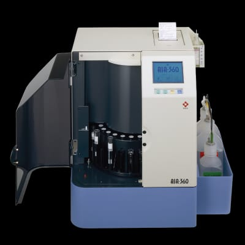
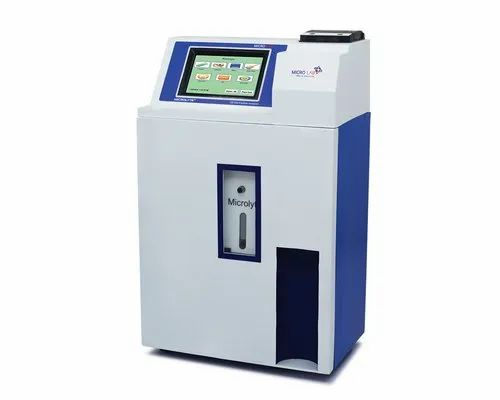

Blood Tests
Complete blood counts, lipid profile, liver and kidney panels, and more.
We provide a wide range of diagnostic services. Please contact our laboratory for further information or support.
Complete blood counts, lipid profile, liver and kidney panels, and more.

Routine analysis, microscopy, and cultures.
RT-PCR and rapid antigen testing with certified reporting.
We use advanced, world-class diagnostic machines to ensure accurate and reliable test results.

For thyroid and immunoassay tests, we use Tosoh AiA 360, a world-class Japanese analyzer.

For CBC tests, we use Medonic M Series, a world-class Sweden-made analyzer.

Liver, kidney, and lipid profile tests are performed using Erba Chem 7 & Erba Chem 6, Germany-manufactured analyzers.

Cancer and tumor marker tests are conducted using Tosoh AiA 360 Immunoassay Analyzer.

For electrolyte imbalance testing, we use a Micro Lab Electrolyte Analyzer, a world-class Indian-manufactured system.